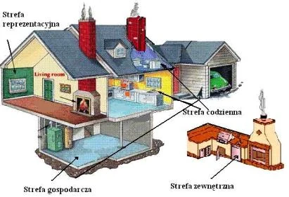
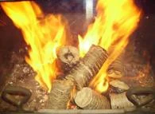
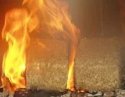
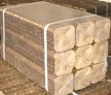
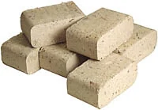
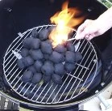
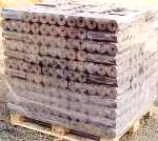

Spis treści (9)
Zapewne dla niektórych kominek czy piec to tylko dekoracyjna atrapa, nieco teatralny rekwizyt mający podnosić status w oczach gości i nieustannie łechtać nienasycone ego. Dla innych kominek to po prostu lokomotywa, maszyna do grzania, która ma pożerać wszystko co do niej wrzucimy i zamieniać w ciepło. To oczywiście dwa skrajne bieguny, większość z Państwa zapewne może się odnaleźć gdzieś pomiędzy nimi. Równie ważne, oprócz tego jak często, jest to, czym palimy? Tu również zbudować można, na zasadzie przeciwieństw, bieguny pomiędzy romantykami, dla których najistotniejsza jest jakość płomieni, czar trzaskającego ognia i ciułaczami, wrzucających wszystko co się da, łącznie ze śmieciami. Pośrodku znajdzie się najbardziej liczna grupa praktyków próbujących po prostu zorganizować palenie w sposób łatwy i przyjemny. Odsłonię od razu karty. To o czym będę dalej pisał jest bez wątpienia skierowane do tej właśnie grupy klientów.
Domowe strefy spalania

Czy chcemy tego czy nie, możemy wydzielić w naszych posesjach różne strefy przestrzeni pełniące odmienne funkcje. Strefę reprezentacyjną (salon), codzienną (pozostałe pokoje, kuchnia, część rekreacyjna), gospodarczą (piwnica, pomieszczenia gospodarcze) i zewnętrzną obejmującą ogród i podwórze. We wszystkich tych strefach możemy korzystać z różnych urządzeń grzewczych na paliwa drzewne. Jeśli tak kompleksowo spojrzymy na nasze domostwo, to jasne się stanie, że dobór paliwa musi być dopasowany do poszczególnych stref domu w jakich ma ono być stosowane, jak i do funkcji poszczególnych, instalowanych tam urządzeń grzewczych.
Część reprezentacyjna
W salonie zazwyczaj mamy „pełny wypas” i najwyższy poziom. Najczęściej stawiamy tu dekoracyjny kominek, czasami piec. Ze względu na miejsce szczególną wagę przywiązujemy do czystości i estetyki paliwa. Stawiamy je przed kominkiem w ozdobnym koszu lub stojaku no i jasne jest, że nie może ono odstraszać gości swoim wyglądem. Paliwo powinno być zwarte na tyle, by nie obsypywało się w trakcie załadunku i spalania w palenisku. Zwracamy również uwagę na jego zachowanie się w trakcie palenia, oczekujemy w końcu efektów specjalnych stwarzających nastrój.
Korzystnie jest jeśli daje ono żywy jasny płomień, bez dymienia. Dorzucanie paliwa do kominka to cały rytuał, dobrze jeśli możemy je ułożyć w stos lub piramidkę, podkreślające walory ognia. Liczy się jego spora wielkość ułatwiająca załadunek, łatwość rozpalania i wysoka kaloryczność wydłużająca czas palenia. Do salonu bez wątpienia warto kupić droższe, lecz zapewniające wysoką jakość, paliwo.
Strefa codzienna
W innych pokojach stawiamy różne piece kominkowe, lub kaflowe, już mniej reprezentacyjne. Coraz częściej, na nowo, pojawia się piec na drewno w kuchni np. z piekarnikiem, lub w części rekreacyjnej np. piec w saunie. Estetyka paliwa i spalania nie jest już tak ważna, liczy się szybka możliwość załadunku ręcznego, łatwość rozpalania, dobra kaloryczność, niska zawartość popiołu. Również i w tej strefie ważne jest by paliwo się nie obsypywało, czyli istotna jest jego zwartość. Słowem paliwo też musi być dobre, choć niekoniecznie z najwyższej półki.
Strefa gospodarcza
Znajdujący się w piwnicy kocioł centralnego ogrzewania to już inna bajka. Podobnie gospodarcze piece nadmuchowe w warsztacie czy garażu. Tutaj działamy całkiem bez fanfaronady, nie jest ważny kształt paliwa, liczy się głównie niska cena, łatwość przechowywania i załadunku, mała zawartość popiołu i wysoka kaloryczność. Kawałki paliwa mogą być drobne, byle łatwo dawały się wrzucić do kotła np. z worka. Chyba, że mamy kocioł z podajnikiem, wówczas ważne jest by ich wielkość mieściła się w określonym przedziale, zwykle maksymalnie 5 cm średnicy i by dały się one rozkruszyć spiralą podającą.
Strefa zewnętrzna
Całkiem inna sytuacja jest na zewnątrz domu. Tam posiadamy różne urządzenia takie jak kominki ogrodowe, grille, barbecue, piece do pieczenia chleba. Ze względów kulinarnych podstawową sprawą jest tu aromat paliwa. Ten zapewnić możemy tylko odpowiednio dobierając gatunki drewna. Buk, olcha, jesion, gatunki drzew owocowych dodadzą smaczku każdej potrawie. Pewną rolę może odgrywać łatwość przechowywania takiego paliwa na dworze i nic więcej.
Transport i przechowywanie
Do wszystkich tych stref naszego domu, w których mamy urządzenia grzewcze, musimy paliwo dostarczyć. Właśnie transport jest jednym z głównych problemów jakie stwarzają paliwa drzewne. W końcu najpierw trzeba je przywieźć, rozładować, potem zmagazynować, donosić partiami do pieców i załadować do kosza czy stojaka. Po czym odwrotnie, od czasu do czasu wybrać i wynieść popiół, zgromadzić go, a potem wysypać lub wywieźć.
Jeśli sporadycznie korzystamy z naszych urządzeń możemy kupować paliwo małymi partiami np. w marketach i dowozić je w bagażniku naszego samochodu. W tej sytuacji dla każdego kierowcy istotne jest czy bagażnik pozostanie czysty, a dla wszystkich to czy dadzą radę podnieść paczkę z paliwem i czy można ją za coś złapać, by przenieść do poszczególnych pomieszczeń lub magazynu. Rozpakowanie nie może być zbyt trudne i powinno być możliwe bez używania jakiś specjalnych narzędzi.
Z całkiem inną sytuacja mamy do czynienia wówczas, gdy paliwa drzewne są podstawowym źródłem naszego ogrzewania. Wtedy nie wchodzą w rachubę kilogramy lecz tony, metry sześcienne, które trzeba gdzieś zgromadzić i uzupełniać ich stan, nawet w najsroższą zimę.
Szalenie ważne jest by paliwo było zapakowane tak, żeby można je było w całym pakunku rozładować i przewieźć do magazynku, z którego potem na bieżąco wyjmować będziemy mniejsze porcje. Wymaga to naturalnie odpowiedniego przygotowania podwórza, drewutni lub pomieszczeń w części gospodarczej czy piwnicy, oraz posiadania odpowiedniego sprzętu np. paleciaka, czy wózka do drewna. Jeśli nieodpowiednio przygotujemy się do odbioru paliwa, źle dobierzemy jego asortyment, to czeka nas sporo ręcznej pracy i wiele straconych godzin, powielanych dalej przez lata. To co przy zakupie wydaje się na początku tanie, po doliczeniu naszej pracy może okazać się bardzo kosztowne i do tego uciążliwe. Źle zorganizowany transport paliwa na dłuższą metę zniechęcić może do korzystania z niego nawet największych entuzjastów.
Dlaczego brykiety?

Wielu klientów zadaje mi pytanie czym palić: drewnem kominkowych czy brykietami? Myślę, że warto przeprowadzić taką analizę jaką zaproponowałem powyżej, na własny użytek. Odpowiedź nasunie się wówczas Państwu sama. Każdy rodzaj paliwa ma swoje mocne strony. Bez wątpienia bardzo dużo mają ich również brykiety. Przedstawię je pokrótce dokonując jednocześnie przeglądu tego co jest dostępne na rynku. Dodam z początku na zachętę coś o czym nie wszyscy zapewne wiedzą: Polska jest jednym z większych producentów brykietów w Europie i znaleźć u nas można bardzo szeroką ich gamę.
Rodzaj drewna a wartość opałowa brykietów
Każdy wie, że do kominka lepiej wybierać twarde drewno takie jak dąb, buk, akację, grab, jesion. Zdecydowanie gorzej wypada już brzoza, klon, kasztan, a jeszcze gorzej topola, olcha, lipa. Powszechna jest również opinia że drewno iglaste np. sosna, świerk, jodła, modrzew do palenia w kominkach specjalnie się nie nadają. Główną przyczyną tego stanu rzeczy jest różna gęstość poszczególnych gatunków. Polano dębu jest ciężkie, będzie się dlatego stosunkowo długo palić, o wiele dłużej niż takie samo polano świerkowe. W przypadku drewna kominkowego te obserwacje są w pełni słuszne. Ale czy jest też tak w przypadku brykietów zrobionych z trocin tych poszczególnych gatunków ?
Otóż zdecydowanie nie. Brykietowanie to proces który nadajając drewnu nową strukturę, zagęszcza je do tego stopnia, że różnice w naturalnej gęstości zanikają. Brykiet tej samej wielkości z trocin dębowych ma taką samą wagę jak z trocin sosnowych czy świerkowych. Mało tego, wbrew potocznym skojarzeniom brykiet z trocin iglastych ma wyższą wartość kaloryczną, bowiem niezależnie od lekkiej wagi, drewno iglaste tak naprawdę jest bardziej kaloryczne od liściastego. Do tego jeśli porównamy polano i brykiet tej samej objętości z trocin tego samego gatunku drewna, to okaże się, że brykiet jest cięższy od samego drewna.
Mamy więc pierwsza zaletę: brykiety mają, w przeliczeniu na objętość, zdecydowanie wyższą wartość energetyczną niż drewno kominkowe, a do tego wyższą i jednakową gęstość niezależną od rodzaju użytego drewna.
Dodam, że podobne zalety mają brykiety z innych form biomasy. Bardziej kaloryczne od drewna są brykiety z łusek gryki. Taką jak drewno wartość mają brykiety z łusek słonecznika, zbliżoną brykiety ze słomy lnianej, rzepakowej, konopnej. Nieco niższą brykiety ze zwykłej słomy i siana. Zbrykietować, a potem skutecznie spalić można każdy rodzaj biomasy.
Wilgotność drewna kominkowego a wilgotność brykietów
Drewno kominkowe ze względu na grubość szczap schnie bardzo wolno. Tak naprawdę musi leżeć w przewiewnym miejscu rok żeby mieć wilgotność 25% i dwa lata, żeby osiągnąć wilgotność 15%. Im bardziej wilgotne drewno tym mniejsza jest jego wartość opałowa. Część energii zawartej w drewnie tracimy, zużywana jest ona w trakcie spalania na wyparowywanie wody. Drewno podsuszane w komorach ma wilgotność około 20 % ale tylko w zewnętrznej warstwie o grubości około 2 centymetrów. W środku jego wilgotność jest zdecydowanie większa. Wynika to z faktu obkurczania się w wysokiej temperaturze porów drewna w zewnętrznej warstwie co utrudnia wydostawanie się z niego wilgoci.
Brykiety wytwarzane z suchych trocin z produkcji drzewnej mogą mieć wilgotność nawet do 7% Natomiast mokre trociny, przed sprasowaniem, są suszone do 12% wilgotności, a potem w trakcie brykietowania tracą jeszcze parę procent wilgoci. Proces suszenia jest łatwy bo trociny mają w porównaniu do polan miniaturową frakcję o bardzo dużej powierzchni, dzięki czemu schną równomiernie. Mamy zatem drugą zaletę: brykiety w całej swojej strukturze mają równą wilgotność, znacznie mniejszą od wilgotności drewna kominkowego . Podwyższa to ich wartość kaloryczną i eliminuje zjawisko strzelania iskrami w trakcie spalania (co jest głównie związane z rozrywaniem włókien drzewnych przez parującą ze środka polan wodę).
Wielkość polan a formy i wielkość brykietów
Polana możemy zamówić w różnej długości, najczęściej mają po 33cm długości, ale do większych kotłów czy kominków wkładać można zdecydowanie dłuższe np. 50 cm
Jest to bez wątpienia ich zaleta. Chociaż kształt polan jest nierównomierny zazwyczaj dobrze układa się je w palenisku, obojętnie czy pionowo w stos, czy na płask. Problem stwarzają jedynie okrągłe kawałki gałęzi, które potrafią sturlać się z paleniska.
W przeciwieństwie do polan brykiety mogą mieć bardzo dużą różnorodność form. Spotykamy je w formie walca, wielokąta, kostki, a nawet owalnej. Z drugiej strony posiadają całkowitą powtarzalność kształtu. Przy danej formie ich kształt jest zawsze taki sam. Na rynku znaleźć możemy taki, który nam najbardziej odpowiada. Trzecią zatem zaletą jest powtarzalność i wybór kształtu brykietów . Jest tutaj w czym wybierać.
Brykiety w kształcie walca

Na rynku najczęściej spotykane są brykiety w kształcie walca o średnicy do 7 cm . Wynika to z rodzaju posiadanych brykieciarek przez najliczniejszą grupę producentów. Brykiety tego typu stosowane są zwykle do spalania w kotłach. Ich długość wacha się pomiędzy 4 a 20 cm .
Tradycyjnie wsypywane były w ciężkie 30 kg wory, ostatnio ze względu na normy unijne 20 lub 25 kg . Spotkać je można również na rynku w workach 10 kilogramowych, bardziej poręcznych dla osób słabszych. Ważna informacja dla posiadaczy kotłów z podajnikami: brykiety do takich zastosowań nie powinny być zbyt mocno zbite, tak by podajniki poradziły sobie z ich rozkruszaniem.
Brykiety o średnicy powyżej 7,5 cm, to już kategoria interesująca do zastosowań w kominkach i piecach. Jeśli maja po 12-15 cm stosować je można śmiało w piecach codziennego użytku. Do kominków, ze względów praktycznych, nadają się jedynie te o długości w przedziale 20 cm do 30 cm . Zwykle są ułożone w rzędach i zafoliowane w 10 kilogramowych paczkach. Długość brykietów jest wówczas dobrana według wagi przy określonej w paczce ilości sztuk.
Brykiety okrągłe można układać w paleniskach powiedzmy w dwóch warstwach ułożonych prostopadle do siebie wówczas spalają się bez obsuwania.
Brykiety w kształcie wielokąta

Bardzo stabilnie w paleniskach leżą brykiety wielokątne. Spotykamy tu brykiety o przekroju kwadratu o boku 7 do 10 cm lub zbliżone w wymiarach brykiety sześcio czy ośmiokątne o długościach 25 - 30 cm . Są to najczęściej brykiety bardzo zwarte o dużej gęstości. Waga brykietu przekracza z reguły kilogram. Pewną ich odmianą są brykiety z otworem w środku, wytwarzane na brykieciarkach ślimakowych typu Pini-Kay, zwykle o nieco mniejszym przekroju od 5,5 do 7 cm.
Brykiety długie o kształcie wielokąta pakowane są najczęściej w zgrzewkach foliowych, po 10 kg i dodatkowo przewiązane mocną taśmą, za którą można paczkę złapać. Brykiety układane są na paletach w ilości 96 lub 100 paczek. Całość jest dodatkowo foliowana. To bardzo dobra oferta do najbardziej wymagających zastosowań. Śmiało trafić mogą na salony. Bardzo dobrze układają się w stojaku i w palenisku. Na rynku, szczególnie krajów alpejskich, jest coraz większe zainteresowanie tego typu brykietami.
Brykiety w kształcie kostki

Brykiety w kształcie kostki wprowadzone przez producenta brykieciarek firmę RUF już od kilku lat świetnie przyjęły się na rynku polskim. Kostka ma z reguły wymiary 15x9x6,5, jest bardzo dobrze sprasowana i pakowana po 12 sztuk w 10 kilogramowe paczki. Nowe maszyny Rufa wytwarzają już kostkę kilogramową, będzie ich zatem po 10 w paczce. Na rynku spotyka się również o 3 centymetry węższą kostkę produkowaną na polskich brykieciarkach. Chociaż kształt kostki jest bardziej przemysłowy (popularnie określana jest mianem cegły) i mniej przypomina polano to sprawdza się bardzo dobrze przy układaniu w palenisku. Brykiety tego typu nadają się zarówno do zastosowań codziennych ale i do salonów.
Brykiety w kształcie owalnym

Ta forma brykietów wytwarzana jest na brykieciarkach walcowych. Bardzo popularna u nas w zastosowaniu do miału z węgla drzewnego. Spotyka się również tego typu brykiety z trocin twardych drzew. Naturalnie zastosowanie do celów kulinarnych przy grillowaniu, wędzeniu, pieczeniu. Zwykle pakowany jest w małych opakowaniach takich jak do węgla drzewnego, czyli 2,5 lub 3 kilogramowych workach papierowych.
Dostawy drewna a dostawy brykietów

Wróćmy do początkowych rozważań związanych z transportem paliwa. Drewno kominkowe przywozić możemy luzem, w skrzyniopaletach lub workach. Ostatnio powoli zaczynają się pojawiać również okrągłe baloty drewna. Drewno luzem na podwórzu to sporo roboty, choć można je ułożyć tam gdzie się chce np. na specjalnych regałach. Duże, dwumetrowe skrzynio-palety są kłopotliwe przy późniejszym wyjmowaniu kawałków drewna. Bardziej sprawdzają się skrzyniopalety jednometrowe, nie trzeba nurkować żeby wyciągnąć drewno. Łatwiej nimi także manewrować na podwórzu. Drewno w siatkowych workach łatwo się przenosi, jest już poporcjowane, lecz siatka zawsze się zaczepia przy wyjmowaniu. Drewno kominkowe musimy postawić w przewiewnym miejscu, żeby nie zsiniało czy spleśniało. Optymalna jest drewutnia, zadaszone regały, czy ewentualnie samo przykrycie ustawionych skrzyniopalet z góry.
Nieco inaczej wygląda rozładunek i przenoszenie brykietów. Przywożone są na paletach.
Musimy naturalnie mieć możliwość rozładowania całej palety. Tu kłaniają się dostawcy z opuszczaną burtą. Po tym już wystarczy paleciak, utwardzona ścieżka i odpowiednio szerokie drzwi do magazynku. Brykiety mogą stać w całkowicie zamkniętym pomieszczeniu. Na palecie mamy około tony suchego paliwa (duża dwumetrowa skrzyniopaleta drewna kominkowego to około 650 kg), zapakowanego w łatwe do wyciągania i opróżniania paczki czy worki. Czyli zawsze jest już ono poporcjowane. Magazyn brykietów może być zdecydowanie mniejszy niż magazyn drewna. Podkreślmy zatem czwartą zaletę: brykiety łatwiej i taniej możemy transportować oraz przechowywać (ułożone na paletach zabierają mniej miejsca). Poporcjowane w paczkach lub workach łatwo dają się wyjmować i przenosić.
Ceny brykietów
Oczywiście ceny są zmienne. W ciągu roku mają rozkład sinusoidy. Najniższe są latem. Warto dlatego wcześniej zaopatrywać się na zimę. Latem jest w czym wybierać i dostaniemy dobrą cenę. Podam kilka różnic między cenami poszczególnych bykietów, najlepiej w euro ponieważ to eksport kształtuje ceny na rynku. W zasadzie to cena brykietów w kształcie kostki wyznacza cenę wszystkich pozostałych brykietów. Najdroższe na rynku są brykiety z otworem w środku typu PiniKay. Są one mniej więcej o 10-15 euro droższe od brykietów w kształcie kostki. Również nieco droższe są brykiety o kształcie wielokąta ale tu różnica jest rzędu 5 euro. Podobną do niej cenę mają długie brykiety w kształcie walca. Brykiety krótsze w zależności od średnicy mają cenę niższą od kostki nawet o 25 euro. Oczywiście brykiety o mniejszej średnicy są inaczej pakowane, ale ich wartość kaloryczna jest taka sama. Nie zależy ona od kształtu. Jeśli policzymy kaloryczność tony brykietów i tony drewna kominkowego to okaże się, że drewno kominkowe jest droższe od brykietów. Brykiety mają średnio około 18,5GJ/tona, natomiast drewno kominkowe w zależności od wilgotności będzie miało od 9 do 14 GJ/tona. Drewno jeśli postoi w przewiewnym miejscu naturalnie podniesie swoja wartość kaloryczną, możemy je dosuszać też przy kominku. Trochę tu poprawimy wskaźniki. Jednak jeśli kupimy drewno zimą to nie ma co liczyć na lepszy bilans. Reszta zależna jest od wagi różnych gatunków drewna i prostej matematyki. Można powiedzieć jedno: kupując brykiety wiemy od razu ile płacimy za 1GJ. Średnio, jeśli chodzi o brykiet kostkę 1 GJ kosztuje około 6 euro. Tańsze brykiety do kotłów po 4,4 euro/GJ . Kupując drewno przekonamy się o tym dopiero przy paleniu w kominku.
Mamy zatem piątą zaletę: brykiety mają korzystną cenę w przeliczeniu na jednostkę energii .
Jakość brykietów
Do tej pory mówiłem o zaletach brykietów. Jakość ich wykonania może być jednak różna. Dlatego na koniec parę słów na ten temat. Jak powiedziałem wcześniej najlepiej zacząć od przeprowadzenia analizy własnych potrzeb. To co w jednym miejscu jest wadą w innym może być zaletą lub nie stanowić problemu. Tak jest np. ze zwartością brykietów, mniejsza, wskazana jest dla kotłów z podajnikiem, niewskazana do kominków i pieców. Do zastosowań w strefie gospodarczej warto po prostu kupić tanie brykiety i uwzględniać jedynie najważniejsze sprawy jak kaloryczność, ilość popiołu. W przypadku salonu przed brykietami stawiamy najwyższe wymagania i tu trzeba się już im uważnie przyjrzeć. Ograniczę się do paru praktycznych uwag i wskazań, które mogą być pomocne przy ocenie jakości brykietów.
Zapach
Nos nas nigdy nie zawodzi, choć nie jest tak doskonały jak u psa. Brykiety nie mogą mieć nienaturalnego zapachu. Żadnego zapachu chemikaliów. Pamiętać trzeba o tym, że różne gatunki drewna mają różny zapach. Nawet sosna z północnych terenów będzie miała nieco inny zapach niż z południowych. Lecz zapach lakierów, klejów daje się łatwo wyczuć niezależnie od rodzaju drewna.
Frakcja surowca
Zbyt duża ziarnistość materiału, widoczne kawałki zrębki a nie trociny, powodować mogą rozsypywanie się brykietów w trakcie spalania. Producent rozdrabnia odpady ale ich nie mieli. Warto wybierać brykiety o drobnej ziarnistości. Im bardziej rozdrobniona frakcja trocin tym bardziej będa one po sprasowaniu zagęszczone.
Czystość surowca
Jeśli widoczne są ciemniejsze kawałki w brykiecie to może być rozdrobniona kora. Producent wykorzystuje zrzyny. Spodziewać się możemy większej ilości popiołu. Nie przesadzajmy jednak, to nie tragedia. Dopuszczalna ilość do 1,5 % zgodnie z normą DIN. Czyste trociny mogą mieć nawet jedynie 0,3% popiołu. Trzeba przełamać brykiet i spojrzeć na strukturę. Nie powinien zawierać innych składników poza trocinami lub jeśli są z innej biomasy charakterystycznych dla niej frakcji. Żadnego plastiku, gumy, papieru np. zmielonych banknotów, żadnych białych kawałkow mogacych świadczyć o przmiaile płyt laminowanych. Ważna jest barwa surowca. Jasne brykiety przeważnie są zrobione z suchych trocin. Ciemniejsze z suszonych. Suszone trociny mogą mieć nieco więcej popiołu. Kolor brykietów zależy oczywiście od naturalnej barwy drewna z którego są zrobione i powinien jej odpowiadać. Dębowe będą ciemniejsze niż bukowe, te z kolei ciemniejsze od brzozowych czy iglastych. Zmiana barwy na obwodzie brykietów nie jest wadą, jest konsekwencją wysokiej temperatury w niektórych technologiach brykietowania. Ciemny i drobne trociny w brykiecie moga świadczyć o użyciu przemiału z płyt MDF, trzeba sprawdzić zapach.
Gęstość
Już sama waga kawałka brykietu może coś powiedzieć. Dobrze zbity, gęsty brykiet po wrzuceniu do wody zatonie. Prosty, skuteczny test. Mocno zbite brykiety są ciężkie i mają podobny ciężar niezależnie od rodzaju użytego drewna. W obiegu rynkowym funkcjonują pewne przeliczniki wiadomo np: w przypadku brykietów RUF 12 kostek, w przypadku starszych maszyn, daje 10 kg, a z nowszych pras w paczce 10-cio kilowej jest ich tylko 10. Pewną informację o jakości prasowania daje powtarzalność ilości sztuk w paczce i powtarzalność ich długości.
Zwartość
Zależy od gęstości ale i od rodzaju i stanu brykieciarki. Pamiętajmy że brykiety zrobione na mechanicznych brykieciarkach maja plastrową budowę. Lecz dobrze zbite powinny wytrzymać test spuszczenia z góry na podłogę, Jeśli będą całe jest OK , jeśli pękną w jednym miejscu też nie jest źle. Gorzej jak rozsypią się w kilku. Warto również poskrobać zewnętrzną powietrznię brykietów-powinna być gładka i nie obsypywać się. W paczce brykiety nie powinny być połamane.
Pył w worku
Jeśli zobaczymy nieco pyłu w worku to jest OK, najprawdopodobniej znaczy to, że brykiety są zrobione z bardzo suchych trocin (poniżej7%). Jeśli pyłu będzie sporo to może być oznaką małej zwartości. Należy ją sprawdzić.
Wilgotność
Zaparowane worki, nienaturalnie ciężki brykiet, powiększony kształt, świadczyć może o wyższej wilgotności. Brykiet może mieć również wówczas sporo pęknięć. W ostateczności można użyć wilgotnościomierza.
Jakość zapakowania
Przekrzywiona paleta, brykiety wciśnięte między deski palety, świadczą o niewłaściwym ułożeniu lub źle dobranej palecie. W konsekwencji brykiety mogą być popękane. Paleta powinna być owinięta folią strench i najlepiej jeśli ma kapę z foli u góry chroniąca przed zaciekami. Przy załadowaniu i rozładowaniu trafić można na różną pogodę. Paczki muszą się bez problemu wyjmować, brykiety w nich zapakowane powinny być ściśnięte, najlepiej bez luzu. Korzystne są worki papierowe bowiem można je spalić w kominku, z drugiej strony nie widzimy przez nie brykietu, powinny zatem mieć wycięcia. Większość produkcji pakowana jest w folię, tutaj lepsze są zgrzewki foliowo niż worki bo mocno ściskają brykiety, zabezpieczając je przed uszkodzeniami w czasie transportu. Korzystna przy przenoszeniu paczek jest rączka np. w postaci mocnej taśmy , którą paczka jest przewiązana. Z drugiej strony paczka powinna się dawać łatwo rozpakować bez stosowania specjalnych narzędzi. Pamiętajmy o recyklingu foli z opakowań.
Ten artykuł jest przeniesiony ze starej strony w całości, słowo w słowo, razem z obrazkami.
Stary adres paliwadrzewne.pl/index.php?dzid=99&did=45 przekieruje (301) na nowy paliwadrzewne.pl/artykuly/brykiet-do-kominkow/, więc linki z innych stron i pozycja w Google zostają.